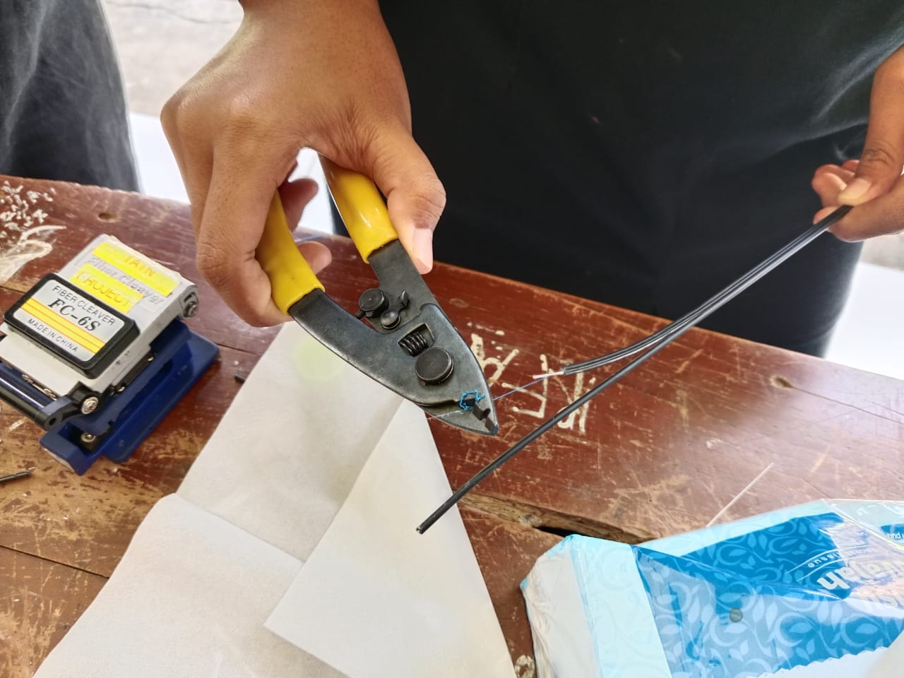
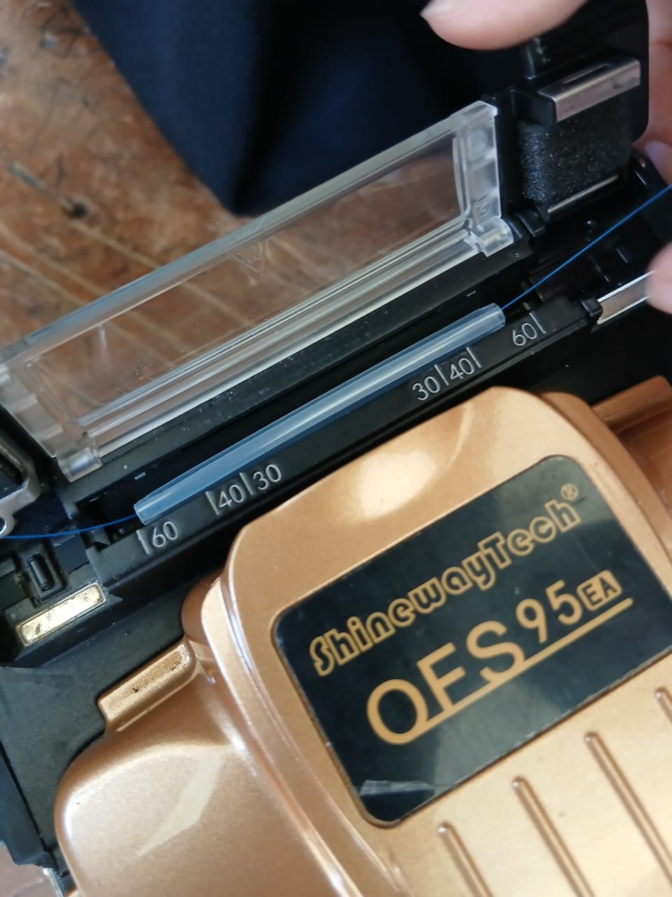
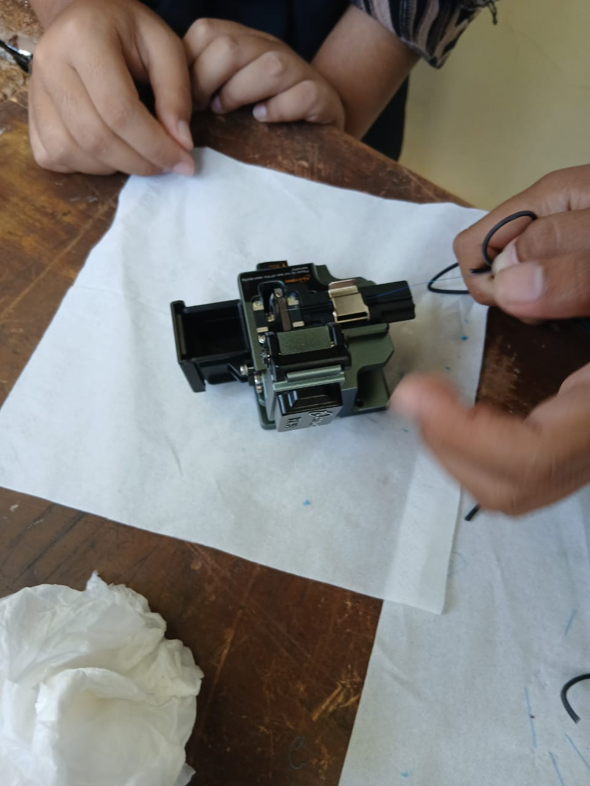
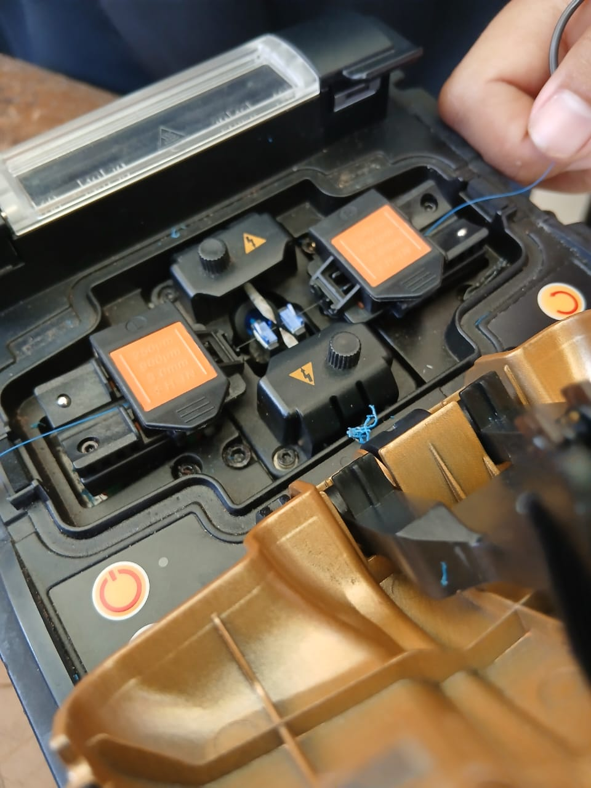
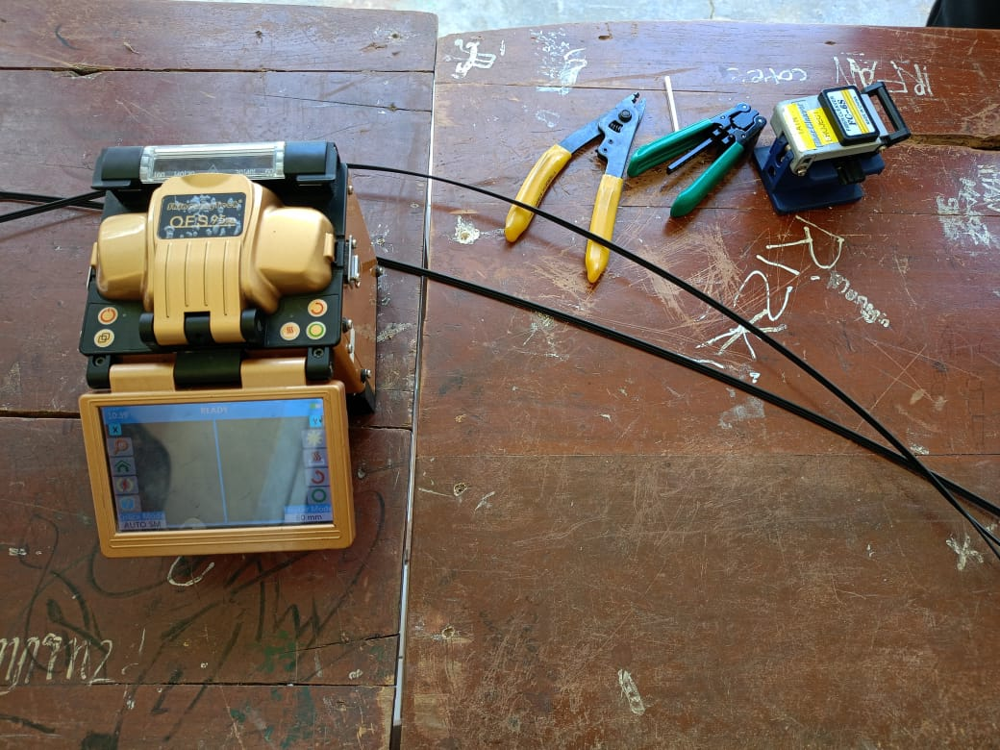
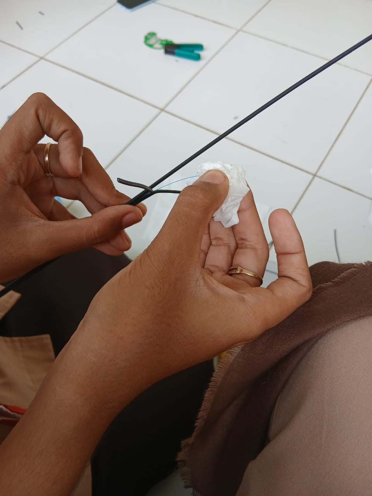

TUGAS PENYAMPUNGAN KABEL FIBER OPTIK
NAMA: Sekar Kusuma Wardani
KELAS: XI TJKT 1
MAPEL: Mapel Pilihan
Alat Dan Bahan
- kabel fiber optik 2
- fusion splicer
- smurf
- cleaver
- clraver
- stripper
- miller
- tisu
- alkohol
Langkah-Langkah
- Potong kabel fo dan pisahkan menjadi 2 bagian menggunakan stripper,
lakukan juga pada kabel satunya
- Kupas kedua kabel fo yang sudah dipisahkan menggunakan miller
hingga terlihat kabel biru
- setelah itu, kupas kabel biru menggunakan stripper dengan hati hati
agar serat kaca tidak pecah
- lalu bersihakan serat kaca yang sudah dikupas menggunakan tisu dan alkohol
- selanjutnya, potong serat kacamenggunakan cleaver dengan ukuran 15mm
- masukan smurf ke salah satu kabel, lalu masukan serat kaca ke fusion splicer,
lalu kunci dan tutup fusion splicer dan pencet tombol proses yang ditandai dengan lingkaran warna hijau
- lihat ke layar jika serat kaca pecah maka ulangi dari awal, jika serat kaca tidak pecah,
maka akan menyatu
- setelah serat kaca menyatu, letakan smurf menutupi serat kaca
dan panaskan menggunakan pembakar/arc yang terdapat di fusion splicer
- tunggu pembakaran selesai hingga tombol pemanas tidak berwarna merah
- kupas salah satu ujung kabel menggunakan miller hingga terlihat kabel biru, lalu kupas kabel biru menggunakan striper
- setelah itu bersihkan serat kaca menggunakan tisu dan alkohol
- lalu potong serat kaca menggunakan cleaver
- selanjutnya pasang konektor pada serat kaca, setelah itu tutup konektor dan dicoba menggunakan senter/laser
Foto Dokumentasi





